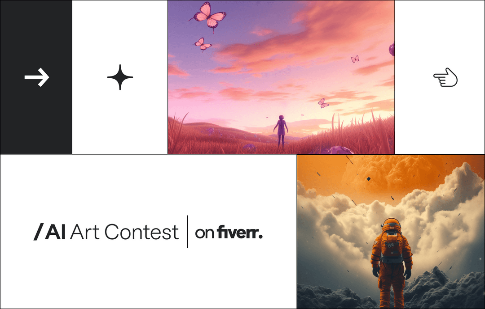

By Fiverr Team | August 9, 2023
We are living in an unprecedented time, characterized by the rapid progress of AI technology that holds the capacity to revolutionize our lives and occupations like never before, particularly when it comes to the world of art.
We at Fiverr are eager to embrace the opportunities unfolding before us and to explore what happens when top tech meets top talent. That’s why we’re calling all artists to use the latest generative tools in a unique competition that simulates real-life business needs
How It WorksStarting today, all artists will be able to take their shot at the prizes by creating stunning AI-generated artwork. To enter, participants must choose between 3 briefs from hypothetical businesses in need of AI-generated artwork, fill out all required fields in the submission form, and submit their work in accordance with the submission guidelines posted on https://contests.fiverr.com/ai-art-2023. Submissions must be received no later than 11:59 pm EST on August 27th, 2023 to be considered.
An all-star judges panel, including Nadav Barkan, Evyatar Edri, and Tal Zagreba, will determine the winners, based on submissions that demonstrate understanding of their chosen briefs, as well as creativity, originality, aesthetic appeal, and a mastery of AI. One winner and runner-up will be crowned for each of the 3 briefs.
The PrizesHere’s where it gets really good… Three (3) grand prize winners will receive a $1,500 USD digital gift card and three (3) runner-up winners will receive a $500 USD digital gift card. Additionally, all winners will get their AI Art Image(s) featured on Fiverr’s social media and email channels as well as support from Fiverr to help them be successful on the platform.
Have friends or colleagues that might want to enter too? Spread the word about the contest on your social channels by using the social sharing buttons on the bottom of the contest page.

Whether you’re scaling up your small business or building a brand from scratch, we’ve got the resources you need to keep you informed and at the top of your game.